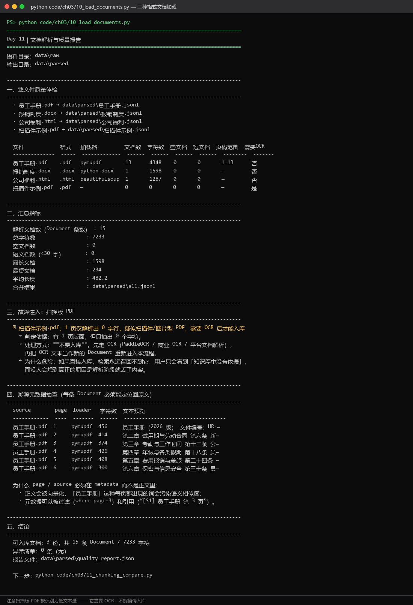

D11
Day 11｜RAG 原理与文档加载
3.2.1 当日问题与验收
当日问题：不同格式的文件怎样变成统一、可追踪的文本数据？
验收要求：
- 成功解析 PDF、Word、HTML 各一份。
- 每条输出包含
source、page或section、loader。 - 输出文档数、总字符数、空文档数和异常列表。
- 扫描版 PDF 能被识别为空文本或低文本量，不能悄悄入库。
3.2.2 统一文档对象
from dataclasses import dataclass, field
from typing import Any
@dataclass(frozen=True)
class Document:
text: str
metadata: dict[str, Any] = field(default_factory=dict)
def normalize_text(text: str) -> str:
lines = [line.strip() for line in text.replace("\u3000", " ").splitlines()]
return "\n".join(line for line in lines if line)逐行讲解：
dataclass让对象结构明确，打印和测试更方便。metadata保存溯源信息，不要把文件名拼进正文干扰检索。replace("\u3000", " ")统一中文全角空格。- 清理空行时要谨慎。表格和代码的换行可能承载结构，生产项目应按文档类型使用不同清洗器。
3.2.3 三种格式加载器
from pathlib import Path
from bs4 import BeautifulSoup
import pymupdf
from docx import Document as WordDocument
def load_pdf(path: Path) -> list[Document]:
items: list[Document] = []
with pymupdf.open(path) as pdf:
for page_index, page in enumerate(pdf):
text = normalize_text(page.get_text("text"))
if text:
items.append(Document(
text=text,
metadata={
"source": path.name,
"page": page_index + 1,
"loader": "pymupdf",
},
))
return items
def load_docx(path: Path) -> list[Document]:
doc = WordDocument(path)
paragraphs = [normalize_text(p.text) for p in doc.paragraphs]
text = "\n".join(p for p in paragraphs if p)
return [Document(text, {"source": path.name, "loader": "python-docx"})] if text else []
def load_html(path: Path) -> list[Document]:
html = path.read_text(encoding="utf-8")
soup = BeautifulSoup(html, "html.parser")
for tag in soup(["script", "style", "nav", "footer"]):
tag.decompose()
text = normalize_text(soup.get_text("\n"))
title = normalize_text(soup.title.get_text()) if soup.title else ""
return [Document(text, {
"source": path.name,
"title": title,
"loader": "beautifulsoup",
})] if text else []
LOADERS = {".pdf": load_pdf, ".docx": load_docx, ".html": load_html, ".htm": load_html}
def load_file(path: Path) -> list[Document]:
loader = LOADERS.get(path.suffix.lower())
if loader is None:
raise ValueError(f"不支持的格式: {path.suffix}")
return loader(path)关键讲解：
- 每页 PDF 单独形成
Document，可保留页码引用。 - Word 示例先处理段落。真实项目还要单独处理表格、页眉页脚和图片文字。
- HTML 主动去除脚本、样式和导航，减少页面模板噪声。
LOADERS是一个分发表。新增 Markdown 加载器时不需要改load_file的控制流。
3.2.4 数据质量报告
def quality_report(documents: list[Document]) -> dict[str, object]:
lengths = [len(doc.text) for doc in documents]
return {
"documents": len(documents),
"characters": sum(lengths),
"empty": sum(length == 0 for length in lengths),
"short_under_30": sum(length < 30 for length in lengths),
"max_length": max(lengths, default=0),
}故障注入：教师提供一份扫描版 PDF。若解析字符数接近 0，学生应标记为“需要 OCR”，而不是把空内容写入向量库。
运行验证：
python code/ch03/10_load_documents.py
这张图要看三处：
- 逐文件质量体检表——每个文件的加载器（
pymupdf/python-docx/beautifulsoup）、文档数、字符数、空文档数一次列全。这就是 3.2.4 要求的「输出文档数、总字符数、空文档数和异常列表」落到终端上的样子。 - 汇总指标——解析文档数（Document 条数）15、总字符数 7233、空文档 0、最长文档 1598、最短 234、平均长度 482.2。
- 故障注入那一段——
扫描件示例.pdf有 1 页却只解析出 0 个字符，报告直接判定「疑似扫描件/图片型 PDF，需要 OCR 后才能入库」，并写明风险：直接入库会导致检索不到内容，用户看到「知识库中没有依据」。
最后一张溯源元数据抽查表（source / page / loader / 字符数 / 文本预览）是验收里「每条输出包含 source、page、loader」的直接证据：逐页给出 员工手册.pdf 第 1 至 13 页，每页正文预览可见「第一章 / 第二章 试用期与劳动合同」等章节标题，说明 page 元数据没有错位。
真实数据：
| 文件名 | 格式 | 加载器 | 文档数 | 字符数 | 空文档 | 页码范围 | 需要 OCR |
|---|---|---|---|---|---|---|---|
| 员工手册.pdf | pymupdf | 13 | 4348 | 0 | 1-13 | 否 | |
| 报销制度.docx | .docx | python-docx | 1 | 1598 | 0 | - | 否 |
| 公司福利.html | .html | beautifulsoup | 1 | 1287 | 0 | - | 否 |
| 扫描件示例.pdf | - | 0 | 0 | 0 | - | 是 |
3.2.5 当日教学流程
| 时间 | 教学活动 | 学生产出 |
|---|---|---|
| 20 min | 比较模型裸答与查制度后的回答 | RAG 必要性说明 |
| 50 min | 讲离线、在线两条链路 | 手绘数据流 |
| 90 min | 教师手写统一加载器 | 可运行代码 |
| 80 min | 学生解析三种格式 | JSONL 结果 |
| 60 min | 质量统计与扫描件故障注入 | 数据质量报告 |
| 60 min | 抽查、复盘、提交 | Git commit |